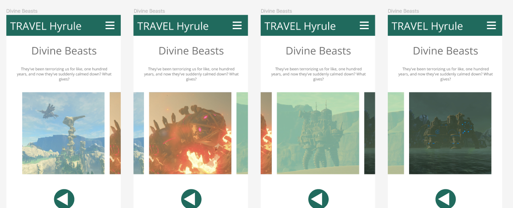
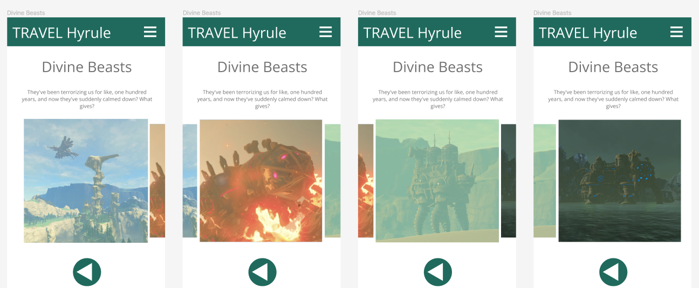
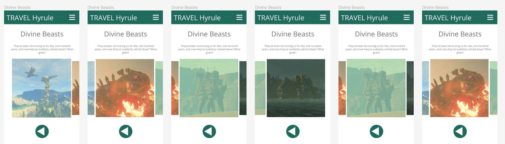
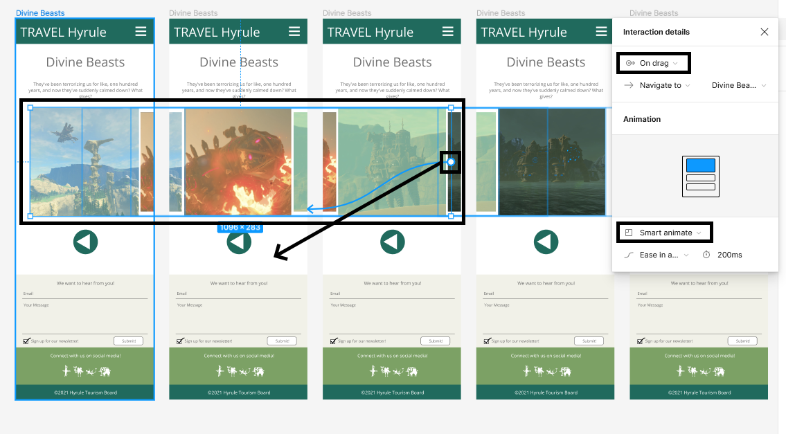

On the Divine Beasts page we will simulate a draggable scrolling gallery effect. In addition, the image which is currently in view will be enlarged somewhat, to make an effect similar to Coverflow.
For this effect we will need six total keyframes, but we will make four to start.
Duplicate the page, and move the image slider so that one of the four images is in the middle of the frame, in order from left to right. Be careful not to drag the group out of the frame when sliding them over!:

To make this effect even more interesting, we will zoom in on the selected beast in each frame. Double-click on the group, select the image in frame, and scale it up. If you hold shift and alt while you drag, it will stay centered and scale while maintaining the aspect ratio.

We need two more keyframes to complete this animation. Duplicated the third artboard as the fifth, and the second artboard as the sixth.

Now we’ll add our animations. The easiest way is to add one animation first, adjust the settings, and then copy and paste more.

It may be tricky to find the connector on the banner, look to the right side of it, which will be different in each of the images, due to the positioning.
Once you have the animation settings correct, connect each images to their keyframe to their right, and connect the final image back to the first artboard.
Test the page. Drag through your images all the way to the right, and then all the way back to the left. The limitation to this animation is that you can only drag in this specific order, but it still creates a neat animation with the coverflow zooming effect.
The trick to making this work was using the smart animate feature, which tweens between differences properties in adjacent frames, including scaling, position, and more. Play with this feature to see what you can come up with!
Also note how dragging changes the behaviour of the back button - it now undoes the last animation rather than going to the previous page. If you do not like this functionality, you can instead hard wire the back buttons back to the Weird Stuff page with the push right effect.